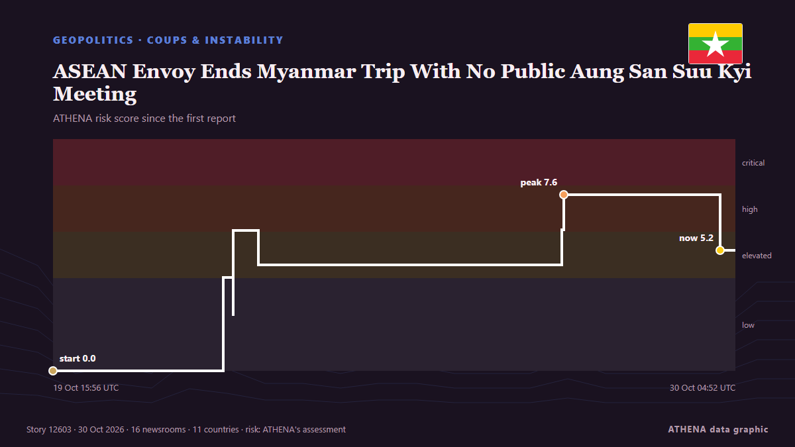

ASEAN Envoy Ends Myanmar Trip With No Public Aung San Suu Kyi Meeting

Despite repeated ASEAN requests for access, Philippine Foreign Secretary Lazaro ended her Myanmar visit without a confirmed meeting with Aung San Suu Kyi. из The Irrawaddy
Независимые источники: 16 изданий в 11 странах, с 19 окт.; первым сообщил Cyprus Mail; освещение идёт на спад. ATHENA оценивает риск как повышенный (5.5/10), прежде всего из-за тяжести описываемого ущерба и географического и отраслевого охвата. Уверенность — 87 % (высокая); подтверждают независимые источники: 16 изданий, средняя надёжность источников — 76 %. Кто сообщал: 9 СМИ в стране Мьянма (Бирма) · Myanmar, 4 СМИ в стране Великобритания · United Kingdom, 3 СМИ в стране Соединенные Штаты · United States. Освещение шло с 19 окт. по 30 окт., 256 ч.
Почему это важно: События в сфере безопасности и дипломатии могут менять союзы, торговлю и рынки далеко за пределами непосредственно затронутых стран.
Что изменилось: 4 новых сообщений от 4 редакций за 24 часа до 30 окт..
Первый заголовок: Son of Aung San Suu Kyi says had first call in five years
Заголовки приводятся на английском языке, как они были опубликованы.
Коротко в цифрах
Отобрано, оценено и написано по опубликованной методологии ATHENA. Ни один редактор не вмешивается в отдельные события. Как это создаётся ›
| 19 Oct 13:17 UTC | 4 |
|---|---|
| 20 Oct 01:17 UTC | 3 |
| 20 Oct 13:17 UTC | 0 |
| 21 Oct 01:17 UTC | 1 |
| 21 Oct 13:17 UTC | 0 |
| 22 Oct 01:17 UTC | 6 |
| 22 Oct 13:17 UTC | 4 |
| 23 Oct 01:17 UTC | 1 |
| 23 Oct 13:17 UTC | 1 |
| 24 Oct 01:17 UTC | 0 |
| 24 Oct 13:17 UTC | 1 |
| 25 Oct 01:17 UTC | 1 |
| 25 Oct 13:17 UTC | 0 |
| 26 Oct 01:17 UTC | 0 |
| 26 Oct 13:17 UTC | 0 |
| 27 Oct 01:17 UTC | 2 |
| 27 Oct 13:17 UTC | 0 |
| 28 Oct 01:17 UTC | 0 |
| 28 Oct 13:17 UTC | 0 |
| 29 Oct 01:17 UTC | 0 |
| 29 Oct 13:17 UTC | 2 |
| 30 Oct 01:17 UTC | 2 |
| 19 Oct 15:56 UTC | 0.0 |
|---|---|
| 22 Oct 07:07 UTC | 4.0 |
| 22 Oct 10:48 UTC | 2.4 |
| 22 Oct 10:50 UTC | 6.1 |
| 22 Oct 19:56 UTC | 5.3 |
| 22 Oct 19:58 UTC | 4.6 |
| 27 Oct 12:37 UTC | 6.1 |
| 27 Oct 13:12 UTC | 7.6 |
| 29 Oct 23:12 UTC | 5.2 |
| 30 Oct 04:52 UTC | 5.5 |
Откуда эти цифры
Значимость
Риск
Уверенность
Освещение — кто сообщил и когда
заголовок в оригинале · открывает источник- Cyprus Mail · Кипр · CyprusMyanmar authorities release rare images of Aung San Suu Kyi
- Sky News (World) · Великобритания · United KingdomKing Charles 'sends books about soil' to Aung San Suu Kyi
- ABC News (International) · Соединенные Штаты · United StatesRare photos of Myanmar's ex-leader Aung San Suu Kyi show her receiving books sent by King Charles
- The Diplomat · Япония · JapanMyanmar Coup Administration Releases Photos of Detained Leader Aung San Suu Kyi
- The Irrawaddy · Мьянма (Бирма) · MyanmarDetained Aung San Suu Kyi Receives UK Royal Package: Regime
- The Guardian · Великобритания · United KingdomMyanmar’s ousted leader Aung San Suu Kyi seen in rare photos after receiving gift from King Charles
- Myanmar Now · Мьянма (Бирма) · MyanmarDetained Suu Kyi receives UK royal package: Myanmar regime
- The Irrawaddy · Мьянма (Бирма) · Myanmar‘They’re Definitely Afraid of Her’: Aung San Suu Kyi’s Son Speaks Out
- NDTV · Индия · India"After More Than 5 Years": Suu Kyi's Son On First Call With Mother
- Myanmar Now · Мьянма (Бирма) · MyanmarSuu Kyi speaks to son for first time in more than five years
- CNA (Channel NewsAsia) · Сингапур · SingaporeSon of Aung San Suu Kyi says had first call in five years
- Bangkok Post — page reader · Таиланд · ThailandSon of Aung San Suu Kyi gets first phone call in five years
- The Guardian · Великобритания · United KingdomAung San Suu Kyi’s son speaks to detained former Myanmar leader for first time in five years
- The Irrawaddy · Мьянма (Бирма) · MyanmarSon of Aung San Suu Kyi Says He Has First Call With Her in 5 Years
- Oman Observer · Оман · OmanSuu Kyi speaks to son for first time in five years
- Taipei Times · Тайвань · TaiwanSon of Aung San Suu Kyi says he had first call with his mother in five years
- The Diplomat · Япония · JapanMyanmar’s Aung San Suu Kyi Speaks With Son For First Time Since Military Coup
- Mainichi (English) · Япония · JapanDetained Myanmar leader Suu Kyi is allowed her first call with her son in 5 years
- NPR World · Соединенные Штаты · United StatesAfter nearly 6 years, ex-Myanmar leader Aung San Suu Kyi's son hears her voice
- ABC News (International) · Соединенные Штаты · United StatesMyanmar's detained leader Suu Kyi traded health concerns with her son in their first call in 5 years
- Bangkok Post — page reader · Таиланд · ThailandFM praises 'progress' on Suu Kyi
- The Guardian · Великобритания · United KingdomMyanmar’s Aung San Suu Kyi ‘sounds strong’ but is isolated, son says
- The Irrawaddy · Мьянма (Бирма) · MyanmarChina’s Myanmar Policy and King Charles’s Gift to Aung San Suu Kyi
- The Irrawaddy · Мьянма (Бирма) · MyanmarHostage Diplomacy: How the Myanmar Junta Is Weaponizing Jailed Aung San Suu Kyi
- New Straits Times · Малайзия · MalaysiaAsean envoy ends Myanmar visit without meeting detained Suu Kyi
- Free Malaysia Today · Малайзия · MalaysiaAsean envoy ends Myanmar trip with no public Suu Kyi meeting
- The Irrawaddy · Мьянма (Бирма) · MyanmarASEAN Envoy Ends Myanmar Trip With No Public Aung San Suu Kyi Meeting
- Myanmar Now · Мьянма (Бирма) · MyanmarASEAN envoy ends Myanmar trip with no public Suu Kyi meeting